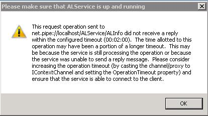
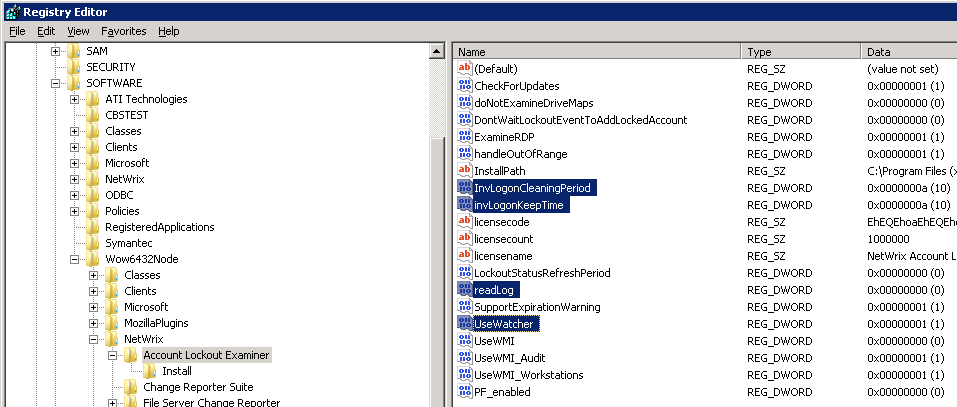
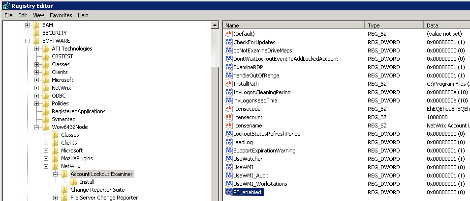
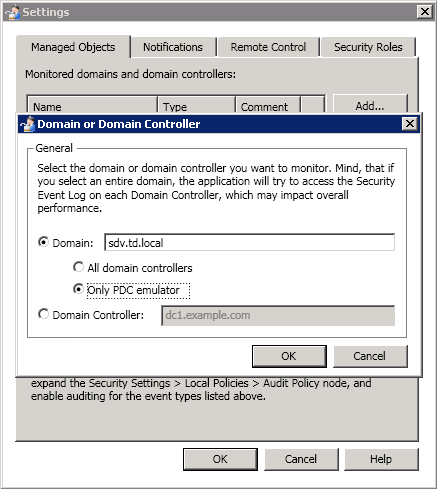

I get the "request timeout" error message when I launch the Account Lockout Examiner console
or some time after.

The issue occurs when the Account Lockout Examiner service is busy and is not able to respond to any requests. It might happen if Account Lockout Examiner is set to monitor all domain controllers and there are a lot of failed logon events to process tracked from every domain controller, or when domain controllers and workstations have a slow connection to the Account Lockout Examiner server (for example located in a remote office).
In order to resolve the issue perform the following steps on the Account Lockout Examiner machine: 1. Change the method of collecting logs:
The issue occurs when the Account Lockout Examiner service is busy and is not able to respond to any requests. It might happen if Account Lockout Examiner is set to monitor all domain controllers and there are a lot of failed logon events to process tracked from every domain controller, or when domain controllers and workstations have a slow connection to the Account Lockout Examiner server (for example located in a remote office).
In order to resolve the issue perform the following steps on the Account Lockout Examiner machine: 1. Change the method of collecting logs:
- Run Registry Editor (Start - Run - regedit)
- Navigate to HKLMSoftware[Wow6432Node]NetWrixAccount Lockout Examiner (Wow6432Node only for x64 OS)
- Set readlog to 0
- Create a DWORD called UseWatcher with the value of 1
- Set invLogonKeepTime to 10 decimal
- Set invLogonCleaningPeriod to 10 decimal
- Restart the Netwrix Account Lockout Examiner service

2. If the above does not help, disable searching of invalid logons on workstations. This will reduce the service load.- Run Registry Editor (Start - Run - regedit)
- Navigate to HKLMSoftware[Wow6432Node]NetWrixAccount Lockout Examiner (Wow6432Node only for x64 OS)
- Create a DWORD called PF_Enabled with the value of 0
- Restart the Netwrix Account Lockout Examiner service 
- In NetWrix Account Lockout Examiner navigate to File > Settings > Managed Objects.
- Select your domain and click Edit.
- Select the Only PDC emulator radio button and click OK to save the changes
